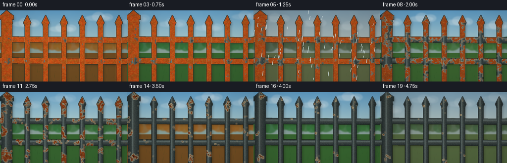
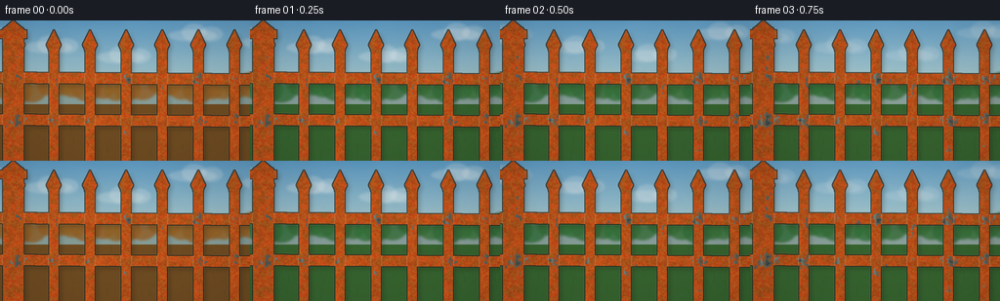
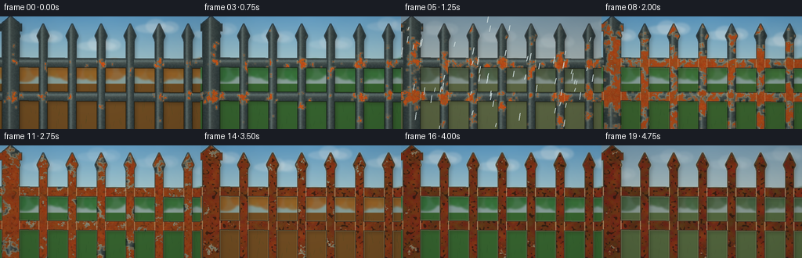
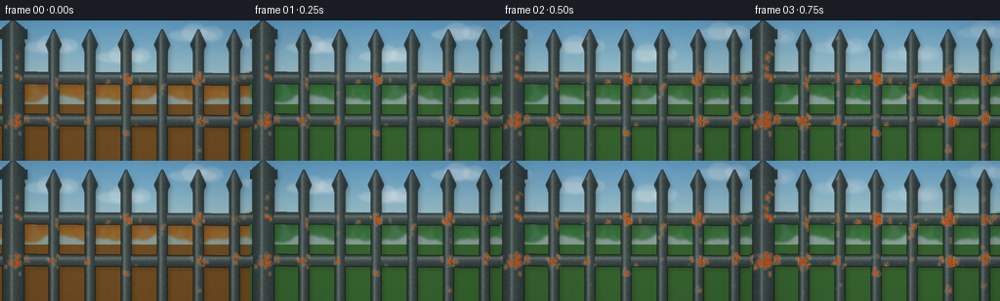

CODING AGENTS AS PIXEL WORLD MODELS
traex/GPT-5.6-Sol · material_0044
点击播放 · 原生 RGB 像素
逐轮保存的候选
回放视频、检查图与代码变化。
每份候选均可单独播放。实际图片检查记录在下方工具轨迹中。
候选 01播放与检查图
点击播放 · 原生 RGB 像素


展开代码变化
--- 上一保存版本
+++ 本次保存版本
@@ -0,0 +1,238 @@
+from pathlib import Path
+import json
+import numpy as np
+from PIL import Image, ImageDraw, ImageFilter
+import artifact_io
+
+CASE_DIR = Path(__file__).resolve().parent
+SPEC = json.loads((CASE_DIR / "task_spec.json").read_text())
+W, H = SPEC["width"], SPEC["height"]
+N = SPEC["frames"]
+S = 3
+WW, HH = W*S, H*S
+rng = np.random.default_rng(44019)
+
+
+def smoothstep(a, b, x):
+ z = np.clip((x-a)/(b-a), 0, 1)
+ return z*z*(3-2*z)
+
+
+def field(seed, coarse=(38, 22), blur=1.5):
+ r = np.random.default_rng(seed)
+ arr = (r.random((coarse[1], coarse[0]))*255).astype(np.uint8)
+ im = Image.fromarray(arr).resize((WW, HH), Image.Resampling.BICUBIC)
+ if blur:
+ im = im.filter(ImageFilter.GaussianBlur(blur*S))
+ return np.asarray(im, dtype=np.float32)/255.0
+
+# Stable material textures: they never slide between frames.
+n_large = field(1001, (22, 13), 2.3)
+n_mid = field(1002, (67, 39), .65)
+n_fine = field(1003, (190, 106), .15)
+n_pits = field(1004, (110, 65), .25)
+Y, X = np.mgrid[0:HH, 0:WW]
+xf, yf = X/S, Y/S
+
+# Corrosion is seeded around welded intersections, lower edges, and vertical scratches.
+hot = np.zeros((HH, WW), np.float32)
+xs = [18, 55, 92, 129, 166, 203, 240]
+for x in xs:
+ for y in (59, 101):
+ hot += np.exp(-(((xf-x)/13.0)**2 + ((yf-y)/8.0)**2))
+# Water catches under rails and along irregular scratches.
+hot += .32*np.exp(-((yf-66)/5.5)**2) + .30*np.exp(-((yf-108)/5.5)**2)
+for x in xs:
+ hot += .18*np.exp(-((xf-(x+2.2*np.sin(yf*.13+x)))/2.2)**2) * smoothstep(34, 140, yf)
+hot = np.clip(hot, 0, 1.4)
+corrosion_score = .43*n_large + .35*n_mid + .22*n_fine + .27*hot
+
+# Tiny fixed scratches that act as recognizable rust initiation sites.
+scratch_score = np.zeros((HH, WW), np.float32)
+for _ in range(25):
+ cx = rng.choice(xs) + rng.uniform(-3, 3)
+ cy = rng.uniform(30, 132)
+ scratch_score += np.exp(-((xf-cx)/.7)**2 - ((yf-cy)/rng.uniform(3, 9))**2)
+corrosion_score += .15*np.clip(scratch_score, 0, 1)
+
+
+def mask_image(draw_fn):
+ im = Image.new("L", (WW, HH), 0)
+ d = ImageDraw.Draw(im)
+ draw_fn(d)
+ return im
+
+# Fence parts in back-to-front order.
+parts = []
+# two rails, subtle perspective offsets
+parts.append(mask_image(lambda d: d.polygon([(-8*S,53*S),(WW+5*S,55*S),(WW+5*S,66*S),(-8*S,64*S)], fill=255)))
+parts.append(mask_image(lambda d: d.polygon([(-8*S,96*S),(WW+5*S,98*S),(WW+5*S,109*S),(-8*S,107*S)], fill=255)))
+
+# Vertical pickets and forged spear heads.
+for x in xs:
+ def make(d, x=x):
+ d.rounded_rectangle(((x-4.7)*S, 25*S, (x+4.7)*S, 151*S), radius=1.6*S, fill=255)
+ d.polygon([(x*S, 10*S), ((x-7.2)*S,25*S), ((x-4.2)*S,31*S),
+ ((x+4.2)*S,31*S), ((x+7.2)*S,25*S)], fill=255)
+ d.ellipse(((x-5.3)*S,24*S,(x+5.3)*S,34*S),fill=255)
+ parts.append(mask_image(make))
+
+# Larger end post provides a close-up corrosion surface.
+def left_post(d):
+ d.rounded_rectangle((3*S, 7*S, 24*S, 151*S), radius=3*S, fill=255)
+ d.rectangle((0, 10*S, 27*S, 18*S), fill=255)
+ d.polygon([(13.5*S,0),(2*S,10*S),(25*S,10*S)], fill=255)
+parts.append(mask_image(left_post))
+
+# All-fence mask for shadows and final edge accents.
+all_mask = Image.new("L", (WW,HH),0)
+for pm in parts:
+ all_mask = Image.fromarray(np.maximum(np.asarray(all_mask), np.asarray(pm)).astype(np.uint8))
+allm = np.asarray(all_mask, dtype=np.float32)/255.
+
+
+def draw_background(frame_i):
+ t = frame_i/(N-1)
+ # Almost three years: each cycle passes summer/autumn/winter/spring.
+ phase = 2*np.pi*(2.65*t + .08)
+ warmth = .5 + .5*np.sin(phase)
+ winter = smoothstep(.25, .95, -.75*np.sin(phase-.45))
+ overcast = .5 + .5*np.sin(frame_i*.87 + .8)
+ arr = np.zeros((HH, WW, 3), np.float32)
+ top_summer = np.array([105,164,202]); top_winter=np.array([128,145,154])
+ bot_summer = np.array([206,221,203]); bot_winter=np.array([187,185,174])
+ top = top_summer*(1-winter)+top_winter*winter - overcast*np.array([12,10,7])
+ bot = bot_summer*(1-winter)+bot_winter*winter - overcast*np.array([10,9,5])
+ gy = np.clip(yf/95,0,1)[...,None]
+ arr[:] = top*(1-gy)+bot*gy
+ # Soft sky grain.
+ arr += (n_large[...,None]-.5)*2.5
+ bg = Image.fromarray(np.uint8(np.clip(arr,0,255)), "RGB")
+ d = ImageDraw.Draw(bg, "RGBA")
+ # Clouds race through the fixed view.
+ for c in range(5):
+ cx = (((c*74 + frame_i*13.4 + 30) % 365)-55)*S
+ cy = (14 + (c%3)*10 + 3*np.sin(frame_i*.3+c))*S
+ alpha = int(25+38*overcast)
+ col = (238,240,237,alpha)
+ d.ellipse((cx-25*S,cy-5*S,cx+25*S,cy+7*S), fill=col)
+ d.ellipse((cx-11*S,cy-11*S,cx+14*S,cy+7*S), fill=col)
+ d.ellipse((cx+7*S,cy-8*S,cx+31*S,cy+7*S), fill=col)
+ # Distant blue hill silhouettes.
+ hills=[]
+ for x in range(-10, 271, 8):
+ yy=66 + 4*np.sin(x*.045+0.7)+2*np.sin(x*.11)
+ hills.append((x*S,yy*S))
+ hills += [(270*S,95*S),(-10*S,95*S)]
+ d.polygon(hills, fill=(66,91,88,110))
+ # Soft tree line changes color with seasons.
+ summer=np.array([49,105,53]); autumn=np.array([143,91,34]); win=np.array([80,82,68])
+ autumn_amt=smoothstep(.25,.9,np.sin(phase+1.55))*(1-winter)
+ tc=summer*(1-autumn_amt)*(1-winter)+autumn*autumn_amt+win*winter
+ for j in range(22):
+ cx=(j*14-8 + 2*np.sin(j*1.7))*S
+ cy=(70 + 3*np.sin(j*.9))*S
+ rr=(10 + (j%4)*2)*S
+ col=tuple(np.clip(tc + np.array([j%3*3,-j%4*2,j%2*2]),0,255).astype(int))+(205,)
+ d.ellipse((cx-rr,cy-rr*.9,cx+rr,cy+rr*.8),fill=col)
+ bg=bg.filter(ImageFilter.GaussianBlur(1.15*S))
+ # Grass / earth foreground, still softly out of focus.
+ d=ImageDraw.Draw(bg,"RGBA")
+ grass_s=np.array([54,99,47]); grass_w=np.array([103,101,73]); grass_a=np.array([112,76,34])
+ gc=grass_s*(1-winter)*(1-autumn_amt)+grass_a*autumn_amt+grass_w*winter
+ d.rectangle((0,86*S,WW,HH),fill=tuple(gc.astype(int))+(255,))
+ # fine grass stems in the distance
+ rg=np.random.default_rng(900)
+ for j in range(170):
+ x=rg.uniform(0,W)*S; y=rg.uniform(91,145)*S; h=rg.uniform(2,10)*S
+ cc=(31,68,31,65) if winter<.5 else (70,70,52,55)
+ d.line((x,y,x+rg.uniform(-1.5,1.5)*S,y-h),fill=cc,width=max(1,S//2))
+ return bg, overcast
+
+
+def composite_part(scene, pm, progress, part_index):
+ m=np.asarray(pm,dtype=np.float32)/255.
+ if not np.any(m): return scene
+ # cylindrical/specular model: horizontal rails shade vertically, pickets horizontally.
+ if part_index < 2:
+ center = 59 if part_index==0 else 102
+ q=np.clip(np.abs(yf-center)/6.5,0,1)
+ shine=np.exp(-((yf-(center-2.2))/1.65)**2)
+ else:
+ xcenter = xs[(part_index-2)%len(xs)] if part_index < 2+len(xs) else 13.5
+ half=5.0 if part_index < 2+len(xs) else 11
+ q=np.clip(np.abs(xf-xcenter)/half,0,1)
+ shine=np.exp(-((xf-(xcenter-1.8))/1.45)**2)
+ base=np.empty((HH,WW,3),np.float32)
+ # Paint progressively dulls even before visible oxidation.
+ pristine=np.array([69,80,78],np.float32)*(1-.20*progress)+np.array([35,31,26])*progress*.20
+ base[:]=pristine
+ base += shine[...,None]*np.array([34,38,37])
+ base -= q[...,None]*np.array([25,24,21])
+ base += (n_fine[...,None]-.5)*np.array([8,9,8])
+ # Monotonic spreading mask with feathered frontier.
+ threshold=.89-.69*(progress**.82)
+ rust=smoothstep(threshold+.045,threshold-.045,corrosion_score)
+ rust*=m
+ # Rust is layered: ochre edges, red-orange body, umber old centers.
+ orange=np.stack([165+43*n_mid,66+33*n_fine,20+12*n_fine],axis=-1)
+ aged=np.stack([82+50*n_large,35+25*n_mid,18+11*n_fine],axis=-1)
+ age=smoothstep(threshold+.16,threshold-.15,corrosion_score)*progress
+ rustcol=orange*(1-age[...,None])+aged*age[...,None]
+ base=base*(1-rust[...,None])+rustcol*rust[...,None]
+ # Deep pits emerge late inside established corrosion.
+ pits=smoothstep(.72,.91,n_pits)*smoothstep(.42,.88,progress)*smoothstep(.35,.9,rust)
+ base=base*(1-pits[...,None]*.72)+np.array([31,22,17])*pits[...,None]*.72
+ rgba=np.dstack([np.clip(base,0,255).astype(np.uint8),(m*255).astype(np.uint8)])
+ scene.alpha_composite(Image.fromarray(rgba,"RGBA"))
+ # Thin pale lift at corrosion fronts reads as blistering paint.
+ rb=Image.fromarray((rust*255).astype(np.uint8)).filter(ImageFilter.MaxFilter(3*S if (3*S)%2==1 else 3*S+1))
+ edge=np.clip(np.asarray(rb,dtype=np.int16)-np.asarray((rust*255).astype(np.uint8),dtype=np.int16),0,255).astype(np.uint8)
+ edge=np.uint8(edge*(.20+.40*progress))
+ flake=Image.new("RGBA",(WW,HH),(205,184,139,0)); flake.putalpha(Image.fromarray(edge))
+ scene.alpha_composite(flake)
+ return scene
+
+
+def make_frame(i):
+ t=i/(N-1)
+ progress=smoothstep(0,1,t)
+ bg,overcast=draw_background(i)
+ scene=bg.convert("RGBA")
+ # Fence's soft cast shadow on the world.
+ sh=Image.new("RGBA",(WW,HH),(22,18,13,0))
+ shifted=Image.new("L",(WW,HH),0)
+ shifted.paste(all_mask,(3*S,3*S))
+ shifted=shifted.filter(ImageFilter.GaussianBlur(2.4*S))
+ shifted=shifted.point(lambda p:int(p*.24))
+ sh.putalpha(shifted); scene.alpha_composite(sh)
+ for k,pm in enumerate(parts):
+ composite_part(scene,pm,progress,k)
+ # Crisp dark outline and occasional exposed bright edges.
+ outer=np.asarray(all_mask.filter(ImageFilter.MaxFilter(2*S+1)),np.int16)-np.asarray(all_mask,np.int16)
+ outline=Image.new("RGBA",(WW,HH),(18,20,18,0)); outline.putalpha(Image.fromarray(np.uint8(np.clip(outer,0,255)*.66)))
+ scene.alpha_composite(outline)
+ # Rain events create diagonal transient streaks without altering corrosion continuity.
+ if i in (5,6,12,13):
+ rd=ImageDraw.Draw(scene,"RGBA")
+ rr=np.random.default_rng(700+i)
+ for _ in range(58):
+ x=rr.uniform(-10,W)*S; y=rr.uniform(0,H)*S; ln=rr.uniform(4,10)*S
+ rd.line((x,y,x-1.4*S,y+ln),fill=(210,225,225,42),width=1*S)
+ # Highlight beads of moisture on rainy fence frames.
+ if i in (6,13):
+ md=ImageDraw.Draw(scene,"RGBA")
+ rr=np.random.default_rng(800+i)
+ for _ in range(24):
+ x=float(rr.choice(xs))+rr.uniform(-3,3); y=rr.uniform(35,130)
+ md.ellipse(((x-0.7)*S,(y-1.2)*S,(x+0.7)*S,(y+1.3)*S),fill=(220,235,232,120))
+ # Gentle optical vignette, fixed over the entire shot.
+ a=np.asarray(scene.convert("RGB"),dtype=np.float32)
+ vig=1-.13*np.clip(((xf-W/2)/(W*.67))**2+((yf-H/2)/(H*.80))**2,0,1)
+ a*=vig[...,None]
+ out=Image.fromarray(np.uint8(np.clip(a,0,255))).resize((W,H),Image.Resampling.LANCZOS)
+ return np.asarray(out,dtype=np.uint8)
+
+frames=np.stack([make_frame(i) for i in range(N)],axis=0)
+artifact_io.save(frames,CASE_DIR)
+print(f"saved {frames.shape} RGB video; first/last mean={frames[0].mean():.1f}/{frames[-1].mean():.1f}")
候选 02播放与检查图
点击播放 · 原生 RGB 像素


展开代码变化
--- 上一保存版本
+++ 本次保存版本
@@ -172,12 +172,12 @@
base += (n_fine[...,None]-.5)*np.array([8,9,8])
# Monotonic spreading mask with feathered frontier.
threshold=.89-.69*(progress**.82)
- rust=smoothstep(threshold+.045,threshold-.045,corrosion_score)
+ rust=smoothstep(threshold-.045,threshold+.045,corrosion_score)
rust*=m
# Rust is layered: ochre edges, red-orange body, umber old centers.
orange=np.stack([165+43*n_mid,66+33*n_fine,20+12*n_fine],axis=-1)
aged=np.stack([82+50*n_large,35+25*n_mid,18+11*n_fine],axis=-1)
- age=smoothstep(threshold+.16,threshold-.15,corrosion_score)*progress
+ age=smoothstep(threshold-.15,threshold+.16,corrosion_score)*progress
rustcol=orange*(1-age[...,None])+aged*age[...,None]
base=base*(1-rust[...,None])+rustcol*rust[...,None]
# Deep pits emerge late inside established corrosion.
可观测工具轨迹
实际执行的命令与返回图片。
命令 1exit 0
/bin/bash -lc "cat prompt.txt && printf '\\n--- GENERATION_RULES.md ---\\n' && cat GENERATION_RULES.md"
命令 2exit 0
/bin/bash -lc "cat task_spec.json && printf '\\n--- FILES ---\\n' && find . -maxdepth 2 -type f -printf '%p\\n' | sort"
命令 3exit 0
/bin/bash -lc 'cat artifact_io.py'
命令 4exit 0
/bin/bash -lc "cat > generate.py <<'PY'
from pathlib import Path
import json
import numpy as np
from PIL import Image, ImageDraw, ImageFilter
import artifact_io
CASE_DIR = Path(__file__).resolve().parent
SPEC = json.loads((CASE_DIR / \"task_spec.json\").read_text())
W, H = SPEC[\"width\"], SPEC[\"height\"]
N = SPEC[\"frames\"]
S = 3
WW, HH = W*S, H*S
rng = np.random.default_rng(44019)
def smoothstep(a, b, x):
z = np.clip((x-a)/(b-a), 0, 1)
return z*z*(3-2*z)
def field(seed, coarse=(38, 22), blur=1.5):
r = np.random.default_rng(seed)
arr = (r.random((coarse[1], coarse[0]))*255).astype(np.uint8)
im = Image.fromarray(arr).resize((WW, HH), Image.Resampling.BICUBIC)
if blur:
im = im.filter(ImageFilter.GaussianBlur(blur*S))
return np.asarray(im, dtype=np.float32)/255.0
# Stable material textures: they never slide between frames.
n_large = field(1001, (22, 13), 2.3)
n_mid = field(1002, (67, 39), .65)
n_fine = field(1003, (190, 106), .15)
n_pits = field(1004, (110, 65), .25)
Y, X = np.mgrid[0:HH, 0:WW]
xf, yf = X/S, Y/S
# Corrosion is seeded around welded intersections, lower edges, and vertical scratches.
hot = np.zeros((HH, WW), np.float32)
xs = [18, 55, 92, 129, 166, 203, 240]
for x in xs:
for y in (59, 101):
hot += np.exp(-(((xf-x)/13.0)**2 + ((yf-y)/8.0)**2))
# Water catches under rails and along irregular scratches.
hot += .32*np.exp(-((yf-66)/5.5)**2) + .30*np.exp(-((yf-108)/5.5)**2)
for x in xs:
hot += .18*np.exp(-((xf-(x+2.2*np.sin(yf*.13+x)))/2.2)**2) * smoothstep(34, 140, yf)
hot = np.clip(hot, 0, 1.4)
corrosion_score = .43*n_large + .35*n_mid + .22*n_fine + .27*hot
# Tiny fixed scratches that act as recognizable rust initiation sites.
scratch_score = np.zeros((HH, WW), np.float32)
for _ in range(25):
cx = rng.choice(xs) + rng.uniform(-3, 3)
cy = rng.uniform(30, 132)
scratch_score += np.exp(-((xf-cx)/.7)**2 - ((yf-cy)/rng.uniform(3, 9))**2)
corrosion_score += .15*np.clip(scratch_score, 0, 1)
def mask_image(draw_fn):
im = Image.new(\"L\", (WW, HH), 0)
d = ImageDraw.Draw(im)
draw_fn(d)
return im
# Fence parts in back-to-front order.
parts = []
# two rails, subtle perspective offsets
parts.append(mask_image(lambda d: d.polygon([(-8*S,53*S),(WW+5*S,55*S),(WW+5*S,66*S),(-8*S,64*S)], fill=255)))
parts.append(mask_image(lambda d: d.polygon([(-8*S,96*S),(WW+5*S,98*S),(WW+5*S,109*S),(-8*S,107*S)], fill=255)))
# Vertical pickets and forged spear heads.
for x in xs:
def make(d, x=x):
d.rounded_rectangle(((x-4.7)*S, 25*S, (x+4.7)*S, 151*S), radius=1.6*S, fill=255)
d.polygon([(x*S, 10*S), ((x-7.2)*S,25*S), ((x-4.2)*S,31*S),
((x+4.2)*S,31*S), ((x+7.2)*S,25*S)], fill=255)
d.ellipse(((x-5.3)*S,24*S,(x+5.3)*S,34*S),fill=255)
parts.append(mask_image(make))
# Larger end post provides a close-up corrosion surface.
def left_post(d):
d.rounded_rectangle((3*S, 7*S, 24*S, 151*S), radius=3*S, fill=255)
d.rectangle((0, 10*S, 27*S, 18*S), fill=255)
d.polygon([(13.5*S,0),(2*S,10*S),(25*S,10*S)], fill=255)
parts.append(mask_image(left_post))
# All-fence mask for shadows and final edge accents.
all_mask = Image.new(\"L\", (WW,HH),0)
for pm in parts:
all_mask = Image.fromarray(np.maximum(np.asarray(all_mask), np.asarray(pm)).astype(np.uint8))
allm = np.asarray(all_mask, dtype=np.float32)/255.
def draw_background(frame_i):
t = frame_i/(N-1)
# Almost three years: each cycle passes summer/autumn/winter/spring.
phase = 2*np.pi*(2.65*t + .08)
warmth = .5 + .5*np.sin(phase)
winter = smoothstep(.25, .95, -.75*np.sin(phase-.45))
overcast = .5 + .5*np.sin(frame_i*.87 + .8)
arr = np.zeros((HH, WW, 3), np.float32)
top_summer = np.array([105,164,202]); top_winter=np.array([128,145,154])
bot_summer = np.array([206,221,203]); bot_winter=np.array([187,185,174])
top = top_summer*(1-winter)+top_winter*winter - overcast*np.array([12,10,7])
bot = bot_summer*(1-winter)+bot_winter*winter - overcast*np.array([10,9,5])
gy = np.clip(yf/95,0,1)[...,None]
arr[:] = top*(1-gy)+bot*gy
# Soft sky grain.
arr += (n_large[...,None]-.5)*2.5
bg = Image.fromarray(np.uint8(np.clip(arr,0,255)), \"RGB\")
d = ImageDraw.Draw(bg, \"RGBA\")
# Clouds race through the fixed view.
for c in range(5):
cx = (((c*74 + frame_i*13.4 + 30) % 365)-55)*S
cy = (14 + (c%3)*10 + 3*np.sin(frame_i*.3+c))*S
alpha = int(25+38*overcast)
col = (238,240,237,alpha)
d.ellipse((cx-25*S,cy-5*S,cx+25*S,cy+7*S), fill=col)
d.ellipse((cx-11*S,cy-11*S,cx+14*S,cy+7*S), fill=col)
d.ellipse((cx+7*S,cy-8*S,cx+31*S,cy+7*S), fill=col)
# Distant blue hill silhouettes.
hills=[]
for x in range(-10, 271, 8):
yy=66 + 4*np.sin(x*.045+0.7)+2*np.sin(x*.11)
hills.append((x*S,yy*S))
hills += [(270*S,95*S),(-10*S,95*S)]
d.polygon(hills, fill=(66,91,88,110))
# Soft tree line changes color with seasons.
summer=np.array([49,105,53]); autumn=np.array([143,91,34]); win=np.array([80,82,68])
autumn_amt=smoothstep(.25,.9,np.sin(phase+1.55))*(1-winter)
tc=summer*(1-autumn_amt)*(1-winter)+autumn*autumn_amt+win*winter
for j in range(22):
cx=(j*14-8 + 2*np.sin(j*1.7))*S
cy=(70 + 3*np.sin(j*.9))*S
rr=(10 + (j%4)*2)*S
col=tuple(np.clip(tc + np.array([j%3*3,-j%4*2,j%2*2]),0,255).astype(int))+(205,)
d.ellipse((cx-rr,cy-rr*.9,cx+rr,cy+rr*.8),fill=col)
bg=bg.filter(ImageFilter.GaussianBlur(1.15*S))
# Grass / earth foreground, still softly out of focus.
d=ImageDraw.Draw(bg,\"RGBA\")
grass_s=np.array([54,99,47]); grass_w=np.array([103,101,73]); grass_a=np.array([112,76,34])
gc=grass_s*(1-winter)*(1-autumn_amt)+grass_a*autumn_amt+grass_w*winter
d.rectangle((0,86*S,WW,HH),fill=tuple(gc.astype(int))+(255,))
# fine grass stems in the distance
rg=np.random.default_rng(900)
for j in range(170):
x=rg.uniform(0,W)*S; y=rg.uniform(91,145)*S; h=rg.uniform(2,10)*S
cc=(31,68,31,65) if winter<.5 else (70,70,52,55)
d.line((x,y,x+rg.uniform(-1.5,1.5)*S,y-h),fill=cc,width=max(1,S//2))
return bg, overcast
def composite_part(scene, pm, progress, part_index):
m=np.asarray(pm,dtype=np.float32)/255.
if not np.any(m): return scene
# cylindrical/specular model: horizontal rails shade vertically, pickets horizontally.
if part_index < 2:
center = 59 if part_index==0 else 102
q=np.clip(np.abs(yf-center)/6.5,0,1)
shine=np.exp(-((yf-(center-2.2))/1.65)**2)
else:
xcenter = xs[(part_index-2)%len(xs)] if part_index < 2+len(xs) else 13.5
half=5.0 if part_index < 2+len(xs) else 11
q=np.clip(np.abs(xf-xcenter)/half,0,1)
shine=np.exp(-((xf-(xcenter-1.8))/1.45)**2)
base=np.empty((HH,WW,3),np.float32)
# Paint progressively dulls even before visible oxidation.
pristine=np.array([69,80,78],np.float32)*(1-.20*progress)+np.array([35,31,26])*progress*.20
base[:]=pristine
base += shine[...,None]*np.array([34,38,37])
base -= q[...,None]*np.array([25,24,21])
base += (n_fine[...,None]-.5)*np.array([8,9,8])
# Monotonic spreading mask with feathered frontier.
threshold=.89-.69*(progress**.82)
rust=smoothstep(threshold+.045,threshold-.045,corrosion_score)
rust*=m
# Rust is layered: ochre edges, red-orange body, umber old centers.
orange=np.stack([165+43*n_mid,66+33*n_fine,20+12*n_fine],axis=-1)
aged=np.stack([82+50*n_large,35+25*n_mid,18+11*n_fine],axis=-1)
age=smoothstep(threshold+.16,threshold-.15,corrosion_score)*progress
rustcol=orange*(1-age[...,None])+aged*age[...,None]
base=base*(1-rust[...,None])+rustcol*rust[...,None]
# Deep pits emerge late inside established corrosion.
pits=smoothstep(.72,.91,n_pits)*smoothstep(.42,.88,progress)*smoothstep(.35,.9,rust)
base=base*(1-pits[...,None]*.72)+np.array([31,22,17])*pits[...,None]*.72
rgba=np.dstack([np.clip(base,0,255).astype(np.uint8),(m*255).astype(np.uint8)])
scene.alpha_composite(Image.fromarray(rgba,\"RGBA\"))
# Thin pale lift at corrosion fronts reads as blistering paint.
rb=Image.fromarray((rust*255).astype(np.uint8)).filter(ImageFilter.MaxFilter(3*S if (3*S)%2==1 else 3*S+1))
edge=np.clip(np.asarray(rb,dtype=np.int16)-np.asarray((rust*255).astype(np.uint8),dtype=np.int16),0,255).astype(np.uint8)
edge=np.uint8(edge*(.20+.40*progress))
flake=Image.new(\"RGBA\",(WW,HH),(205,184,139,0)); flake.putalpha(Image.fromarray(edge))
scene.alpha_composite(flake)
return scene
def make_frame(i):
t=i/(N-1)
progress=smoothstep(0,1,t)
bg,overcast=draw_background(i)
scene=bg.convert(\"RGBA\")
# Fence's soft cast shadow on the world.
sh=Image.new(\"RGBA\",(WW,HH),(22,18,13,0))
shifted=Image.new(\"L\",(WW,HH),0)
shifted.paste(all_mask,(3*S,3*S))
shifted=shifted.filter(ImageFilter.GaussianBlur(2.4*S))
shifted=shifted.point(lambda p:int(p*.24))
sh.putalpha(shifted); scene.alpha_composite(sh)
for k,pm in enumerate(parts):
composite_part(scene,pm,progress,k)
# Crisp dark outline and occasional exposed bright edges.
outer=np.asarray(all_mask.filter(ImageFilter.MaxFilter(2*S+1)),np.int16)-np.asarray(all_mask,np.int16)
outline=Image.new(\"RGBA\",(WW,HH),(18,20,18,0)); outline.putalpha(Image.fromarray(np.uint8(np.clip(outer,0,255)*.66)))
scene.alpha_composite(outline)
# Rain events create diagonal transient streaks without altering corrosion continuity.
if i in (5,6,12,13):
rd=ImageDraw.Draw(scene,\"RGBA\")
rr=np.random.default_rng(700+i)
for _ in range(58):
x=rr.uniform(-10,W)*S; y=rr.uniform(0,H)*S; ln=rr.uniform(4,10)*S
rd.line((x,y,x-1.4*S,y+ln),fill=(210,225,225,42),width=1*S)
# Highlight beads of moisture on rainy fence frames.
if i in (6,13):
md=ImageDraw.Draw(scene,\"RGBA\")
rr=np.random.default_rng(800+i)
for _ in range(24):
x=float(rr.choice(xs))+rr.uniform(-3,3); y=rr.uniform(35,130)
md.ellipse(((x-0.7)*S,(y-1.2)*S,(x+0.7)*S,(y+1.3)*S),fill=(220,235,232,120))
# Gentle optical vignette, fixed over the entire shot.
a=np.asarray(scene.convert(\"RGB\"),dtype=np.float32)
vig=1-.13*np.clip(((xf-W/2)/(W*.67))**2+((yf-H/2)/(H*.80))**2,0,1)
a*=vig[...,None]
out=Image.fromarray(np.uint8(np.clip(a,0,255))).resize((W,H),Image.Resampling.LANCZOS)
return np.asarray(out,dtype=np.uint8)
frames=np.stack([make_frame(i) for i in range(N)],axis=0)
artifact_io.save(frames,CASE_DIR)
print(f\"saved {frames.shape} RGB video; first/last mean={frames[0].mean():.1f}/{frames[-1].mean():.1f}\")
PY
python generate.py
ls -lh pixels.npz index.html inspection.png transition_check.png frames/00.png frames/19.png"命令 5exit 0
/bin/bash -lc "python - <<'PY'
from pathlib import Path
import numpy as np
from PIL import Image
z=np.load('pixels.npz')['pixels']
print('packed tensor', z.shape, z.dtype)
fs=np.stack([np.asarray(Image.open(f'frames/{i:02}.png').convert('RGB')) for i in range(20)])
print('frames',fs.shape,fs.dtype,'range',fs.min(),fs.max())
# changes and static-geometry checks
mad=np.abs(np.diff(fs.astype(float),axis=0)).mean((1,2,3))
print('adjacent MAD:',np.round(mad,2).tolist())
print('adjacent MAD mean/max',mad.mean(),mad.max())
# likely rust pixels: orange/red/brown with R dominant, confined scene count
r,g,b=np.moveaxis(fs,-1,0)
rust=(r>g*1.35)&(g>b*1.25)&(r>72)
print('rust-colored fraction per frame:',np.round(rust.mean((1,2))*100,2).tolist())
# Confirm packed data exactly reproduces the PNGs.
p=((fs[...,0].astype(np.uint32)<<16)|(fs[...,1].astype(np.uint32)<<8)|fs[...,2]).transpose(1,2,0)
print('npz exact:',np.array_equal(p,z))
print('output files:', all(Path(x).exists() for x in ['index.html','pixels.npz','inspection.png','transition_check.png']))
PY"命令 6exit 0
/bin/bash -lc "python generate.py && python - <<'PY'
import numpy as np
from PIL import Image
fs=np.stack([np.asarray(Image.open(f'frames/{i:02}.png').convert('RGB')) for i in range(20)])
r,g,b=np.moveaxis(fs,-1,0)
# Analyze fence-ish colors independent of the orange seasonal background using foreground zones.
zone=np.zeros((144,256),bool)
for x in [13,18,55,92,129,166,203,240]: zone[:,max(0,x-7):min(256,x+8)]=1
zone[50:68,:]=1; zone[94:111,:]=1
rust=(r>g*1.35)&(g>b*1.18)&(r>65)&zone
print('rust zone fraction:',np.round(rust.sum((1,2))/zone.sum()*100,2).tolist())
mad=np.abs(np.diff(fs.astype(float),axis=0)).mean((1,2,3))
print('MAD mean/max',round(mad.mean(),2),round(mad.max(),2))
print('first,last means',round(fs[0].mean(),2),round(fs[-1].mean(),2))
PY"命令 7exit 0
/bin/bash -lc "python - <<'PY'
from pathlib import Path
import json, numpy as np
from PIL import Image, ImageDraw
spec=json.loads(Path('task_spec.json').read_text())
files=[Path('frames')/f'{i:02d}.png' for i in range(spec['frames'])]
assert all(p.exists() for p in files)
f=np.stack([np.asarray(Image.open(p).convert('RGB')) for p in files])
assert f.shape==(spec['frames'],spec['height'],spec['width'],3) and f.dtype==np.uint8
z=np.load('pixels.npz')['pixels']
p=((f[...,0].astype(np.uint32)<<16)|(f[...,1].astype(np.uint32)<<8)|f[...,2]).transpose(1,2,0)
assert np.array_equal(z,p)
assert all(Path(p).stat().st_size>0 for p in ['pixels.npz','index.html','inspection.png','transition_check.png','generate.py'])
# fence mask at output scale to quantify stable-scene transformation
m=Image.new('L',(256,144),0); d=ImageDraw.Draw(m)
d.polygon([(-8,53),(261,55),(261,66),(-8,64)],fill=255)
d.polygon([(-8,96),(261,98),(261,109),(-8,107)],fill=255)
for x in [18,55,92,129,166,203,240]:
d.rounded_rectangle((x-5,25,x+5,144),radius=2,fill=255); d.polygon([(x,10),(x-7,25),(x-4,31),(x+4,31),(x+7,25)],fill=255)
d.rounded_rectangle((3,7,24,143),radius=3,fill=255); d.polygon([(13,0),(2,10),(25,10)],fill=255)
mask=np.asarray(m)>0
change=np.abs(f[-1].astype(float)-f[0].astype(float)).mean(-1)
print('FINAL VALIDATION PASS')
print('shape/dtype:',f.shape,f.dtype)
print('npz exact:',np.array_equal(z,p))
print('mean first-to-last change on fence:',round(change[mask].mean(),2))
print('mean background change:',round(change[~mask].mean(),2))
print('artifacts:',', '.join(p.name for p in files[:2]),'...',files[-1].name,'+ player/inspection')
PY
sha256sum generate.py pixels.npz | sed 's# # ./#'"保存候选 2 份；完成命令 7 次；可验证图片返回 0 张。原始 API 响应与完整日志保留在本地。